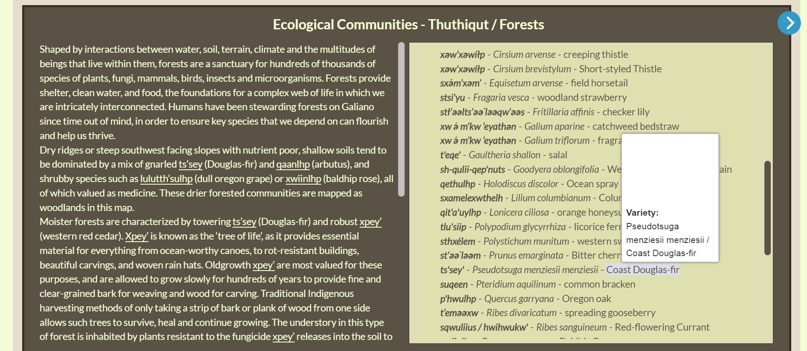

This story has a familiar beginning. As with UI as Code, an innocuous UI request from Dana has unexpectedly deep consequences. Dana noticed that the Douglas fir image on the Xetthecum Forest community pane was no longer showing up… here is what we see:

The cause in itself is indeed fairly innocuous. We are sourcing these images from iNaturalist’s CDN which has been for many years in the slow process of migrating from URLs like https://static.inaturalist.org/photos/641410/medium.jpg to URLs like https://inaturalist-open-data.s3.amazonaws.com/photos/641410/medium.jpg. The fix should be straightforward – rerunning the data pipeline behind the app will re-scrape the API and update the URL.
{kind=link}
{kind=link}
However, when we do this, an unrelated and peculiar problem emerges. The entire taxon record behind this rather attractive fern, Pentagramma triangularis (pictured here) appears to be gone from the app’s data and because of this inconsistency the app fails to start up.

This isn’t entirely unbelievable since in practice taxonomies are gradually shifting all the time, but the circumstances here are a little odd. To start with, the observations in question were sourced from iNaturalist itself, and also, the taxon record itself is still in place, marked as valid, and still has the same id number of 52676. So what on earth has happened?
Looking at the trace of the underlying API call to iNaturalist’s name resolver, the plot thickens:
https://api.inaturalist.org/v1/taxa/autocomplete?q=Pentagramma%20triangularis&phylum=Tracheophyta&rank=species
-->
{
total_results: 5,
page: 1,
per_page: 10,
results: [
{
id: 966161,
rank: 'species',
rank_level: 10,
is_active: true,
name: 'Pentagramma viscosa',
parent_id: 52677,
ancestry: '48460/47126/211194/121943/764796/47754/1224538/48437/545701/52677',
extinct: false,
observations_count: 657,
matched_term: 'Pentagramma triangularis viscosa',
preferred_common_name: 'Sticky goldback fern'
}, {
id: 966158,
rank: 'species',
rank_level: 10,
is_active: true,
name: 'Pentagramma maxonii',
parent_id: 52677,
ancestry: '48460/47126/211194/121943/764796/47754/1224538/48437/545701/52677',
extinct: false,
observations_count: 189,
matched_term: 'Pentagramma triangularis maxonii',
preferred_common_name: "Maxon's Goldback Fern"
}, {
id: 623010,
rank: 'species',
rank_level: 10,
is_active: true,
name: 'Pentagramma rebmanii',
parent_id: 52677,
ancestry: '48460/47126/211194/121943/764796/47754/1224538/48437/545701/52677',
extinct: false,
observations_count: 187,
matched_term: 'Pentagramma triangularis rebmanii',
preferred_common_name: "Rebman's Silverback Fern"
}, {
id: 58767,
rank: 'subspecies',
rank_level: 5,
is_active: true,
name: 'Pentagramma triangularis triangularis',
parent_id: 52676,
ancestry: '48460/47126/211194/121943/764796/47754/1224538/48437/545701/52677/52676',
extinct: false,
observations_count: 160,
matched_term: 'Pentagramma triangularis triangularis'
}, {
id: 181546,
rank: 'subspecies',
rank_level: 5,
is_active: true,
name: 'Pentagramma triangularis semipallida',
parent_id: 52676,
ancestry: '48460/47126/211194/121943/764796/47754/1224538/48437/545701/52677/52676',
extinct: false,
observations_count: 12,
matched_term: 'Pentagramma triangularis semipallida'
}
]
}
This shows a (tidied) rendition of the response to iNaturalist’s autocomplete API, one of a few routes
it has for looking up taxa by name. Note the use of the “phylum hack” of priming the query to only look
within vascular plants with phylum=Tracheophyta. This reflects some experience on finding that the name of
taxa are far from unique, especially if what one is looking up is a bare genus name. For example, the name Porella
matches not only a quite popular liverwort but a
fairly unpopular bryozoan. I was quite surprised when I found this,
but there are only so many names in the world and one can’t expect naturalists divided by huge disciplinary
boundaries to avoid treading on each other’s toes. Choosing the phylum level seems like a good compromise between
a level that one should be able to easily determine based on the context of a project, and not being too coarse to
permit too many false matches.
In any case, the transcript above shows that something quite unfortunate has happened – despite Pentagramma triangularis still being a valid taxon itself, and the one we had previously recorded, it is no longer being returned by the API. This is likely because all of its observations have now been divided up amongst its newly characterised subspecies. Most of these have gone to the nominate subspecies Pentagramma triangularis triangularis which is likely the one we want to return. But what has happened in own own API code that led us to now return nothing at all? Turns out to be an unfortunate interaction of assumptions.
In the result scoring function, we have
hortis.scoreNameMatch = async function (result, query, byIdSource) {
let score = (query.name === result.matched_term ? 512 : 0)
+ (query.name === result.name ? 256 : 0)
+ (128 - result.rank_level);
...
followed by
// Don't hit the DB for any results which are not already an exact match for the query
if (query.phylum && (score & 512)) {
const rankTarget = {};
await hortis.iNat.getRanks(result.id, rankTarget, byIdSource, ["phylum"]);
if (query.phylum === rankTarget.phylum) {
score |= 1024;
}
}
which was an attempt to avoid spamming the iNaturalist API for very poor matches, which already has quite tough rate limits. And then on the outside of the API, given we fail the phylum test, the entire match is axed since it is considered likely to be nonsense:
if (looked && looked.doc && looked.doc.phylumMatch) {
...
} else {
assign(row, s.iNatId, 0);
assign(row, s.assignedINatName, "");
row[s.nameStatus] = "unknown";
unmappedTaxa[iNatName] = {scientificName};
}
So what to do? To start, a match which shares the species prefix should be at least considered for the phylum check otherwise the rest of the system isn’t going to believe in it. We juggle the flags around a bit like this:
hortis.scoreNameMatch = async function (result, query, byIdSource) {
// Extra branch in result.name copes with Pentagramma triangularis -> Pentagramma triangularis triangularis
let score = (query.name === result.matched_term ? 512 : 0)
+ (query.name === result.name || result.name.startsWith(query.name) ? 256 : 0) + (128 – result.rank_level);
...
// Don't hit the DB for any results which are not already an exact(ish) match for the query
if (query.phylum && (score & (512 | 256))) {
This isn’t brilliant – we’re relying on the assumption that the more popular taxon is going to be returned first, which seems justified by the decreasing observation count in the API response but we should really disambiguate this ourselves, but it gets out of the hole we’re in, in having to spend an hour or so of engineering effort on what should have been a few minutes quick fix of an image URL.
Commentary
I wrote this up because I think the situation is interesting from a few points of view. To start with, the whole ontological issue of multiplicity – the reassignment of one entity to two (Pentagramma triangularis -> Pentagramma triangularis triangularis + Pentagramma triangularis semipallida) is exactly the kind of ontological hazard I wrote about in my critique of Oli Sharpe’s Semprola system in 2018. A mismatch in perceived multiplicity is perhaps the most problematic mismatch there can be between different authors looking at the same system, and one which artefacts created by technologists tend to handle very poorly. Someone looking at the world from the lens of a rigid “type system” is likely to neglect such problems completely.
Secondly, this situation is interesting from the point of view of the meaning and function of the code which has been written. When I was visiting PPIG 2024 I got into conversation with a naive person who believed that the task of automated translation of large bodies of code from one language/platform to another was straightforward because all one needed to do was “derive the specification of the code” and then translate according to that. But where is the specification of this code? Instead, it embodies a relation which has only emerged interactionally with a particular external system and its ontology, from the point of view of the needs of a particular community. This relation is also contingent and fragile – this site is likely to be patched again before long, as ontological plates continue to shift, but as it stands it represents a kind of embodied knowledge1 that needs to be treated with caution. I see this an example of Peter Wegner’s 1997 thesis, that interaction is more powerful than algorithms – whilst we have what looks like an algorithm here, it is really only a contingent expression of the state of a particular community interaction at a particular moment. Long ago, Burke urged the value of epistemological caution in tinkering with things that require “even more experience than any person can gain in his whole life” and “pulling down an edifice which has answered in any tolerable degree for ages the common purposes of society” and I see this situation as a small microscosm of a kind of Burkean caution2. Ian Shapiro gives a fine introduction to this thought as part of the Yale Moral Foundations of Politics course.
Anyway, there it is, we live to fight another day – and with every interaction with an external API comes a tussle of this kind, for example, the similar but distinct tussle with the GBIF taxon API which has its own discontents.